Amphibia
Ordnungen
- Urodela - Schwanzlurche
- Anura - Froschlurch
Salamandridae - Salamander und Molche
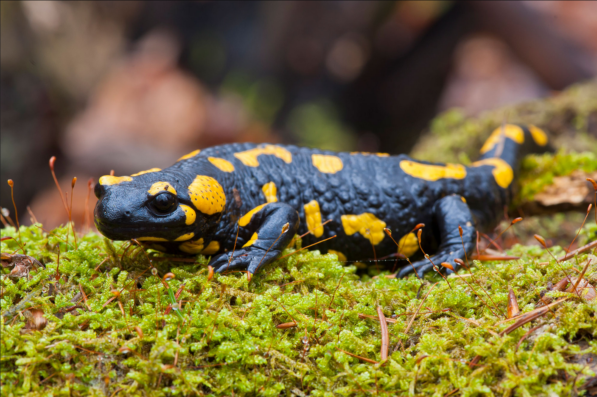
Feuersalamander (Salamandra salamandra)
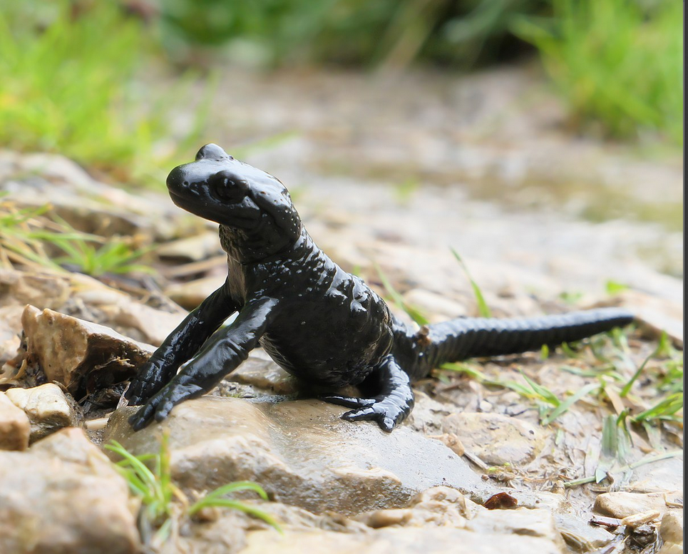
Alpensalamander (Salamandra atra)
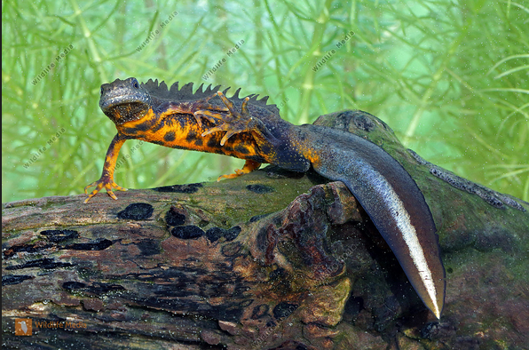
Kammmolch (Triturus cristatus)
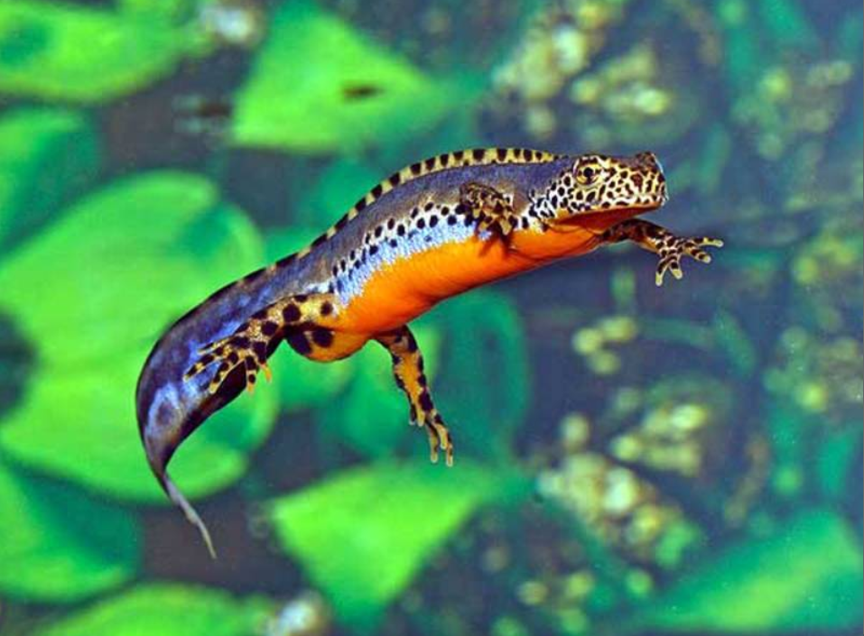
Bergmolch (Ichthyosaura alpestris)
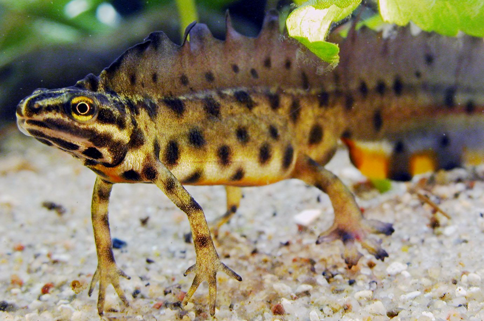
Teichmolch (Lissotriton vulgaris)
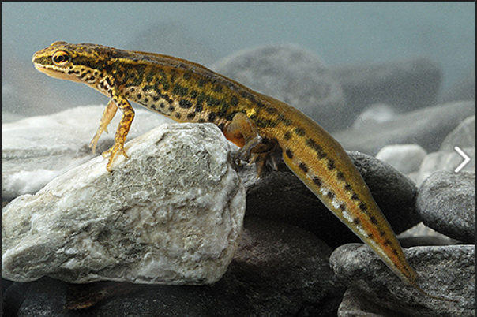
Fadenmolch (Triturus helveticus)
Hylidae - Baumfrösche
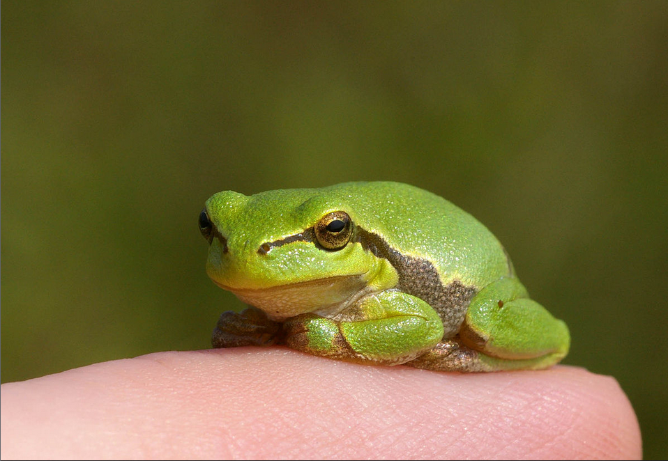
Laubfrosch (Salamandra salamandra)
Ranidae - Echte Frösche
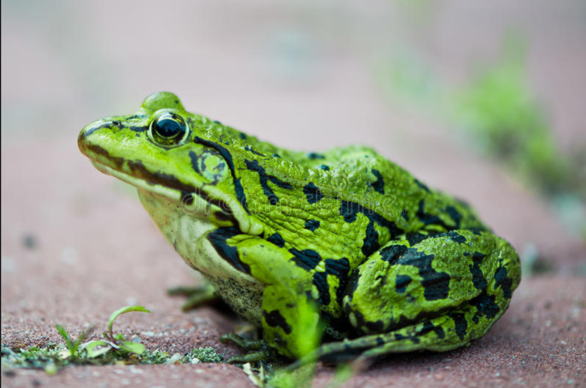
Grünfrosch (Pelophylax)
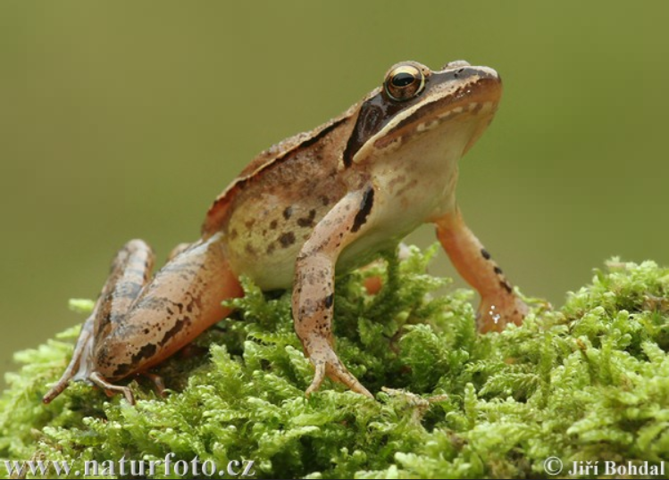
Braunfrosch (Rana)
Bufonidae - Kröten
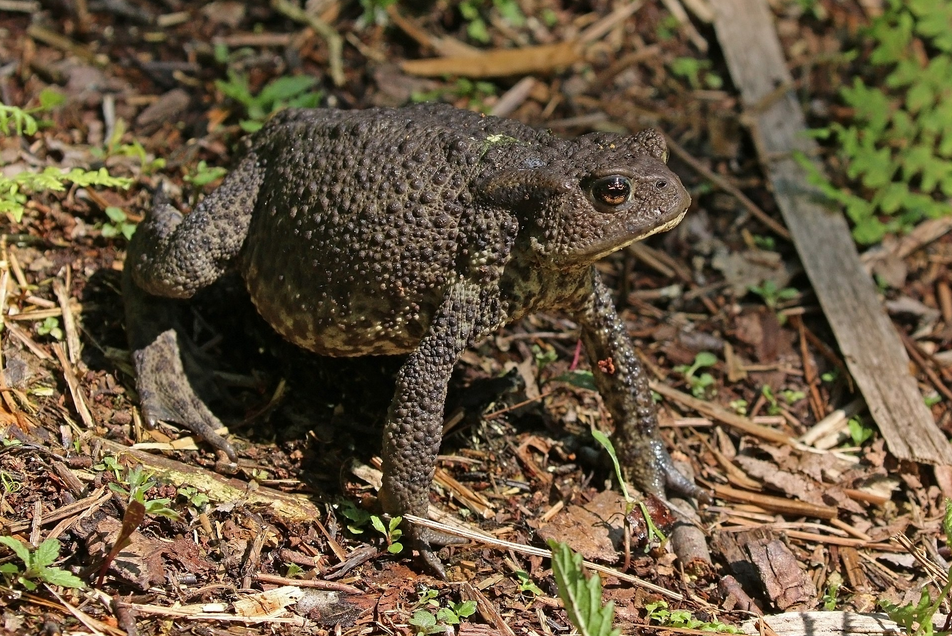
Erdkröte (Bufo bufo)
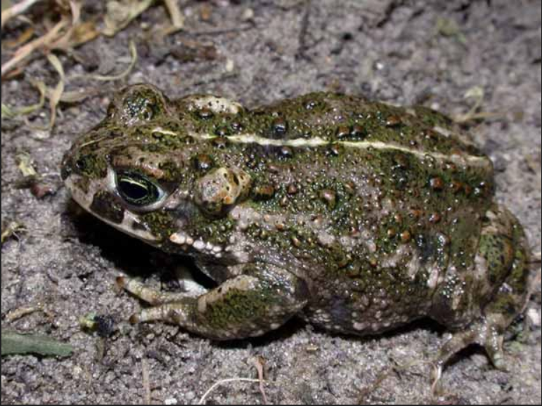
Kreuzkröte (Bufo calamita)
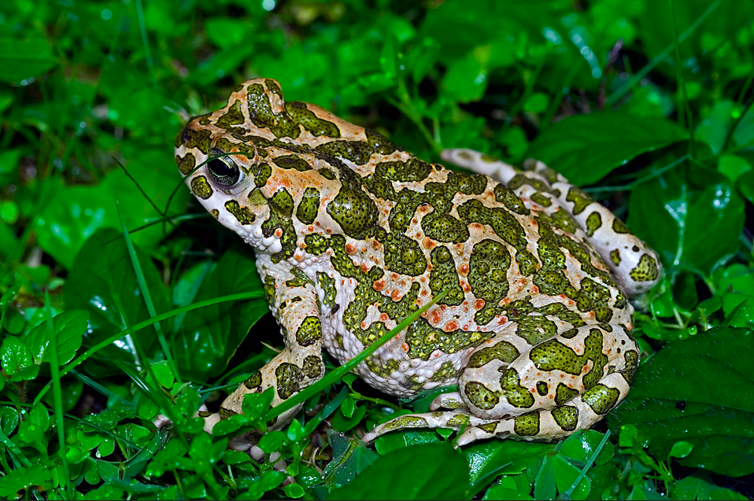
Wechselkröte (Bufo viridis)
Discoglossidae - Scheibenzüngler
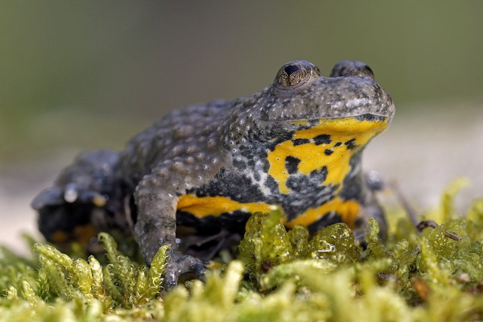
Gelbbauchunke (Bombina variegata)
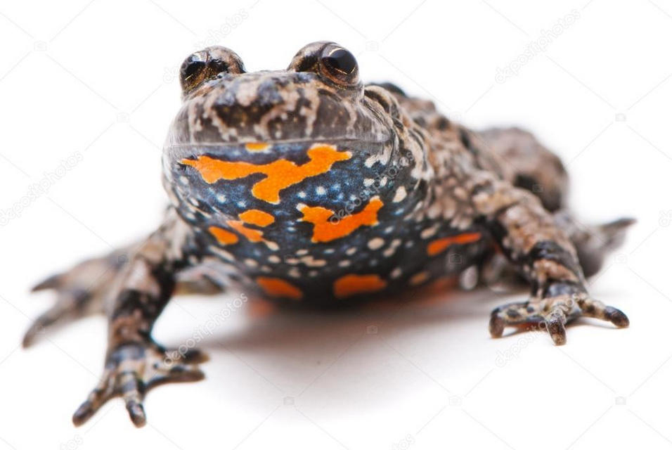
Rotbauchunke (Bombina bombina)
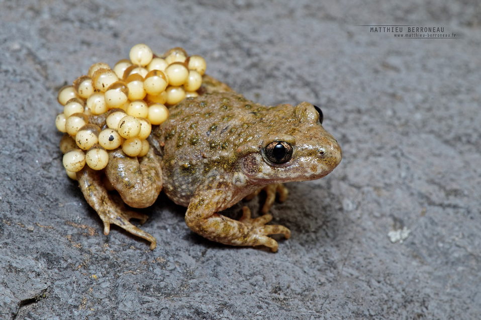
Geburtshelferkröte (Alytes obstetricans)
Pelobatidae - Krötenfrösche
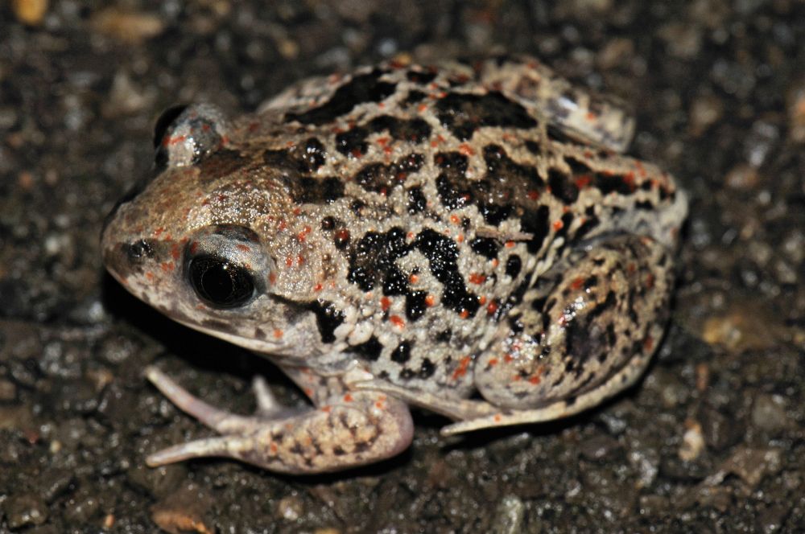
Knoblauchkröte (Pelobates fuscus)
Zurück